How vLLM serves a request — on a CPU and on a GPU
We sent the same request to vLLM on a laptop CPU and on an RTX 4060, recorded every process with the profiler, and put all the traces on one clock. This guide follows that request from the HTTP socket to the model and back, one function at a time, and shows which parts of vLLM change when the device changes.
Every claim here comes from a trace or from a line of vLLM's source, and is cited. The numbers are there to make the mechanism visible, not to rank the hardware.
Eight captures, one timeline per run
For each device we captured vLLM twice: once in its default configuration (how it really runs) and once eager (no compilation, no CUDA graphs, so every operation is visible). Each was driven with a single request, and again with four requests arriving at staggered moments.
Every process, on one clock
The API server's trace, the engine core's (or the worker's) trace with CPU ops and GPU
kernels, a py-spy sample of the CPU engine core where it has no profiler, and the
client's own timestamp for every token. torch stamps each trace with
baseTimeNanoseconds; base/1000 + ts is wall-clock time, so the
files line up to within about a millisecond.
512 prompt tokens, 32 streamed out
Streaming, so every token travels back through the API server as its own chunk, the way a chat client sees it. A short throwaway request goes first inside the profiled window, so the measured request is not the first one the profiler sees.
What vLLM does → where → what the trace shows
Each chapter names the mechanism, cites the source (file.py:line at v0.33.0), shows it in a trace, and says what is different on the other device. Tags like cpugpu mark what is device-specific.
Two different host machines
The GPU sits in a different laptop (Ryzen 9 7940HS) than the CPU leg (i7-12800H). The API server and scheduler are CPU work on both, so their microseconds reflect two different CPUs. Compare the shape of those phases, not their exact times.
The timeline figures have one row per thread that matters. Each row is coloured by the
innermost recognisable vLLM function running at that moment: blue = HTTP/OpenAI layer,
purple = tokenize or add-request, orange = IPC (ZMQ or shared memory), teal =
schedule(), green = prepare inputs, red = model forward, pink =
compute_logits, yellow = sample, light blue = update_from_output
and the output path, dark grey = blocked waiting, mid grey = waiting for the GPU. Yellow
ticks on the client row are tokens arriving.
Processes, threads, and the wires between them
vllm serve is not one program. It is a front end that speaks HTTP and an
engine that runs the model, in separate processes that exchange messages. On the CPU,
vLLM splits off a third process. Knowing which process and thread does what is the key
to reading any vLLM trace.
CPU: three processesvLLM defaults, as traced
API server
AsyncLLM; later the output handler, detokenizer, SSEmsgpack
EngineCore
Requests, queues themScheduler + KV-cache manager; sends each step to the worker and waitsEngineCoreOutputs, sends them over ZMQqueue
Worker
GPU: two processes and a devicevLLM defaults, as traced
API server
AsyncLLM, output handler, SSEmsgpack
EngineCore (+ worker)
stream
GPU
The API server is the same code on both devices, and on both it hands requests to a
separate EngineCore process over ZMQ. AsyncLLM has no in-process mode at all:
v1/engine/core_client.py:115 raises if asyncio is used without
multiprocessing. The difference is where the model runs.
| decision | CPU | GPU | where it is decided |
|---|---|---|---|
| where the model runs | its own Worker process (mp executor) | inside the EngineCore (uni executor) | platforms/cpu.py:351 “OMP requires the MP executor”; config/parallel.py:1099 |
| engine loop | step(), synchronous | step_with_batch_queue(): async scheduling, 2 batches in flight | platforms/cpu.py:347 “async scheduling is not required on CPU”; config/vllm.py:1719, v1/engine/core.py:232 |
| scheduler class | Scheduler | AsyncScheduler | config/scheduler.py:231 |
| torch.compile | Inductor, DYNAMO_TRACE_ONCE | Inductor → Triton, VLLM_COMPILE | platforms/cpu.py:373; log: compilation_config.mode |
| CUDA graphs | none | FULL_AND_PIECEWISE: FULL graphs for decode batches ≤ 16 requests, PIECEWISE for mixed batches ≤ 32 tokens | platforms/cpu.py:371; log: “Capturing CUDA graphs” |
| attention | vLLM's CPU attention (_C::cpu_attention_with_kv_cache) | FlashAttention (FLASH_ATTN) | v1/attention/backends/cpu_attn.py; log: cuda.py:508 |
| KV block size | 128 tokens | 16 tokens | platforms/cpu.py:549 (update_block_size_for_backend); config/cache.py:185 |
| KV cache size | fixed 4 GiB (VLLM_CPU_KVCACHE_SPACE) → 18,688 fp32 tokens, 9.1 requests of 2K | 5.21 GiB left at --gpu-memory-utilization 0.85 → 48,768 bf16 tokens, 23.8 requests of 2K | logs: “CPU/GPU KV cache size” |
| dtype | float32 (no bf16 hardware path on this CPU) | bfloat16 | dtype_for in harness/env.sh |
OpenMP needs its own process
The CPU worker pins OpenMP threads to cores and sets thread-binding environment variables before torch starts. That cannot be done inside the engine-core process, so vLLM moves the model into a worker and talks to it through a shared-memory queue (distributed/device_communicators/shm_broadcast.py).
Keep the GPU fed
On a GPU the host can prepare step N+1 while the device computes step N. vLLM does exactly that by default. On a CPU there is nothing to overlap with: the cores doing the math are the same cores that would schedule, so vLLM turns it off.
The engine's logic
Same API server, same Scheduler algorithm, same model runner class
(CPUModelRunner subclasses GPUModelRunner), same model code.
When four requests arrive, both devices make identical scheduling decisions
(chapter 6).
The same request, end to end, in each layout
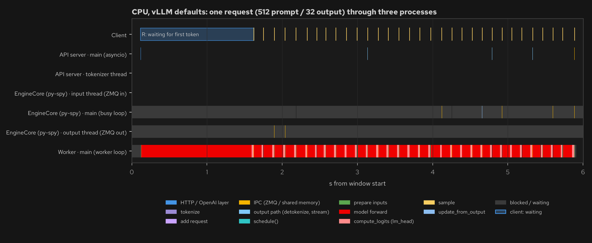
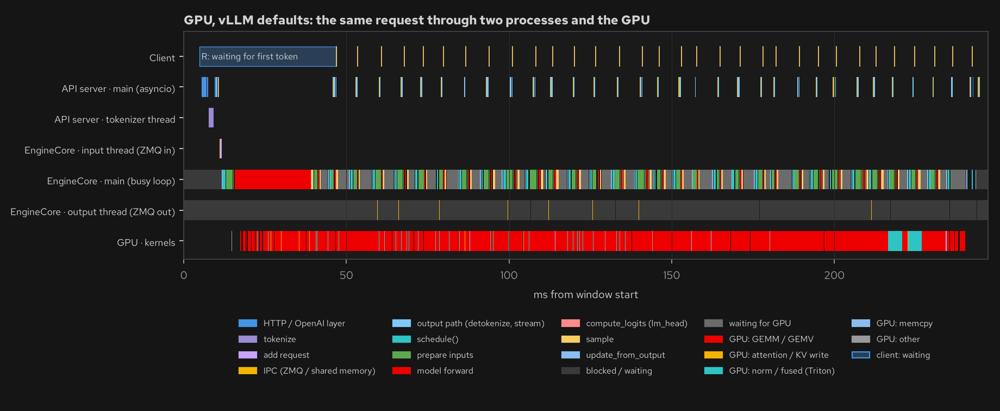
What vLLM does between vllm serve and “startup complete”
Most of vLLM's structure is decided at startup: which processes exist, how much KV cache there is, which graphs have been compiled and captured. The server's own log records each decision. These lines come from the default-mode runs.
| stage | cpu | gpu |
|---|---|---|
| processes | API server → spawns EngineCore → spawns Worker | API server → spawns EngineCore (the worker lives inside it) |
| threads | OpenMP auto-binding: 13 threads in the worker (VLLM_CPU_OMP_THREADS_BIND=auto) | one CUDA stream for compute |
| load weights | 0.83 s | 0.16 s · 1.12 GiB on the device |
| torch.compile | ~31 s: the cached AOT artifact failed to load, so Inductor recompiled and saved it again | 0.13 s: loaded from the compile cache |
| warm-up / profiling run | “Warming up model for the compilation” | a dummy forward to measure peak activation memory |
| KV cache | 4.0 GiB fixed → 18,688 tokens = 146 blocks × 128 | 5.21 GiB available → 48,768 tokens = 3,048 blocks × 16 |
| CUDA graphs | — | 7 PIECEWISE (1…32 tokens) + 5 FULL (1…16 requests) captured in ~1 s, 0.06 GiB |
| init engine / boot-to-ready | 38.4 s / 68 s | 4.5 s / 22 s |
The KV-cache line is the one to understand, because it sets how many requests vLLM can
hold at once. One token of KV for this model is 28 layers × (K and V) × 8 KV heads × 128
dims × bytes per value: 229,376 B in fp32, 114,688 B in bf16. The
CPU leg gets a fixed budget (VLLM_CPU_KVCACHE_SPACE, 4 GiB here). The GPU
gets whatever is left of 85% of device memory after weights, activations and graphs. The
engine then rounds down to whole blocks: 4 GiB ÷ 229,376 = 18,724 tokens, rounded
down to a multiple of 128 is 18,688. That rounding is also how we found the CPU's block
size before finding the line that sets it.
The KV cache tensor appears in every attention op of the CPU trace with its shape:
[146, 8, 128, 128] — blocks, KV heads, tokens per block, head dim — once for K
and once for V. Every request's KV lives in those 146 blocks, handed out by the scheduler's
KV-cache manager.
In the default runs the model forward is a compiled graph. On the CPU it is one function
generated by Inductor (from the compile cache). On the GPU it is a CUDA graph replay for
decode, and Triton kernels launched one by one for a 512-token prefill, because no graph
was captured for anything larger than 32 tokens. The Python modules you know from the
model file — Qwen3DecoderLayer, RMSNorm, SiluAndMul
— only appear in the trace in eager mode. That is why this guide uses both: default to
see how vLLM really runs, eager to see what it runs.
From the HTTP socket to the first token, function by function
This is the request's whole path as the traces recorded it: every hop between threads and processes, with the vLLM function that does the work and the moment it happened. Times are milliseconds after the client sent the request.
| what happens | where in vLLM | cpu eager | cpu default | gpu eager | gpu default |
|---|---|---|---|---|---|
| in: API server → engine core (all host-side Python) | |||||
| client sends the HTTP request | harness/drive_journey.py | 0 | 0 | 0 | 0 |
| uvicorn parses it, FastAPI routes and validates it | uvicorn · fastapi/routing | 0.53 | 0.68 | 0.82 | 0.80 |
| OpenAI completions handler starts | entrypoints/openai/completion/api_router.py:37 → serving.py:115 | 1.36 | 2.17 | 2.06 | 2.34 |
| prompt tokenized, on a thread-pool thread | renderers/base.py:842 → utils/async_utils.py:38 (run_in_executor) | 1.82–2.58 | 2.79–3.77 | 2.65–4.52 | 2.97–4.37 |
AsyncLLM.add_request: build the EngineCoreRequest | v1/engine/async_llm.py:397 · input_processor.py:373 | 3.51 | 5.38 | 6.04 | 5.69 |
| sent to the engine over ZMQ | v1/engine/core_client.py:1339 | 3.84 | 5.76 | 6.52 | 6.12 |
engine input thread decodes it into a Request, queues it | v1/engine/core.py:1126 (thread: core.py:1933) | 4.28 | py-spy | 7.05 | 6.48 |
busy loop wakes: Scheduler.add_request → WAITING queue | v1/core/sched/scheduler.py:2931 | 4.57 | py-spy | 7.87 | 7.00 |
schedule(): admit the request, allocate its KV blocks | scheduler.py:699 · kv_cache_manager.py:380 | 4.64 | py-spy | 7.96 | 7.06 |
cpuworker process picks up execute_model from shared memory | v1/executor/multiproc_executor.py:1163 | — | 6.99 | — | — |
| the prefill step: 512 tokens through 28 layers, then the logits | |||||
step starts (execute_context_1(512)_generation_0(0)) | v1/worker/gpu_worker.py:1332 → gpu_model_runner.py:3905 | 5.55 | 7.12 | 9.66 | 8.20 |
| gpufirst kernel runs on the device | CUDA stream | — | — | 10.38 | 8.78 |
host finishes the step (forward + compute_logits) | end of the annotation | 1472.6 | 1504.6 | 37.28 | 34.50 |
sample_tokens: the sampler picks the token | gpu_model_runner.py:4269 → v1/sample/sampler.py:129 | 1472.8 | 1505.2 | 37.34 | 34.57 |
| gpulast kernel of the step finishes | CUDA stream | — | — | 41.72 | 39.14 |
| out: engine core → API server → client | |||||
| cpuworker returns the token through shared memory | multiproc_executor.py:1096 | — | 1505.9 | — | — |
update_from_output: append the token, check stop conditions | scheduler.py:2259 | 1473.4 | py-spy | 63.68 | 39.46 |
engine output thread sends EngineCoreOutputs over ZMQ | core.py:2144 (thread: core.py:2042) | 1474.1 | py-spy | 64.45 | 40.70 |
| API server receives and decodes it | core_client.py:1217 → async_llm.py:880 | 1480.1 | 1506.6 | 64.86 | 41.05 |
OutputProcessor updates the request's state | v1/engine/output_processor.py:728 | 1480.6 | 1506.8 | 65.14 | 41.26 |
| incremental detokenization | v1/engine/detokenizer.py:96 | 1480.7 | 1506.9 | 65.19 | 41.30 |
| SSE chunk written to the socket | completion/serving.py:326 → uvicorn send | 1481.5 | 1507.5 | 65.74 | 42.06 |
| client receives the first token (TTFT) | 1481.8 | 1507.7 | 65.90 | 42.25 | |
The front half is the same code
HTTP parsing, the OpenAI layer, tokenization, building the engine request, one ZMQ hop, one queue hop, and the scheduler admitting the request: about 5.5 ms on the CPU leg's host and 8 ms on the GPU leg's. It is CPU work on both devices, and the GPU leg's host is a different processor. The CPU's three-process layout adds the shared-memory hand-off to the worker: ~1.2 ms from the ZMQ send to the worker picking up the step.
1,467 ms of math vs 30 ms of GPU
On the CPU, 99% of TTFT is the prefill step itself. On the GPU, the prefill runs from the first kernel at 8.8 ms to the last at 39.1 ms. The host finished launching at 34.5 ms and the device ran ~4.6 ms behind. No CUDA graph covers a 512-token batch (graphs stop at 32 tokens), so even in default mode each compiled kernel is launched separately.
Async scheduling can delay the first token
In GPU eager mode the token is sampled at 37.3 ms but only reaches
update_from_output at 63.7 ms. Between the two, the
engine scheduled and launched the next decode step (20 ms of eager kernel
launching) before collecting the first result. That is how the batch queue works
(chapter 4). With CUDA graphs the next launch takes ~1.7 ms, so the cost almost
disappears.
The way in, zoomednumbers = the list under each figure
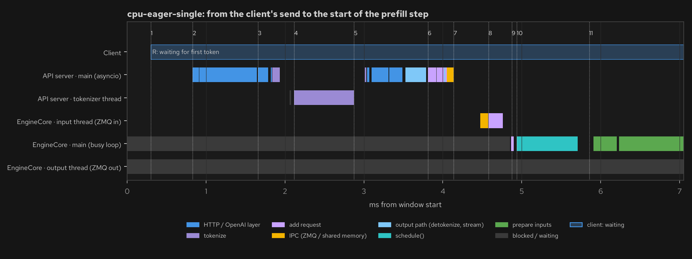
schedule() (teal, 0.77 ms) and starts preparing inputs (green).
- 0.00 client sends
- 0.53 uvicorn / FastAPI
- 1.36 completions handler
- 1.82 tokenize starts (pool thread)
- 2.58 tokenize ends
- 3.51 AsyncLLM.add_request
- 3.84 ZMQ send
- 4.28 engine input thread decodes
- 4.57 Scheduler.add_request
- 4.64 schedule()
- 5.55 prefill step starts
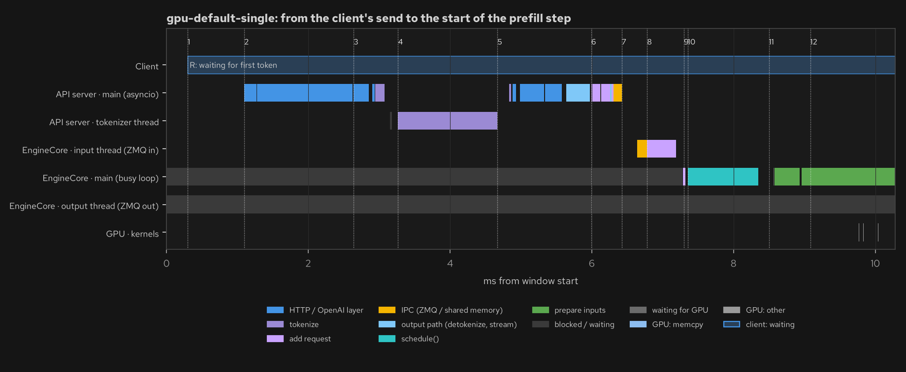
- 0.00 client sends
- 0.80 uvicorn / FastAPI
- 2.34 completions handler
- 2.97 tokenize starts
- 4.37 tokenize ends
- 5.69 AsyncLLM.add_request
- 6.12 ZMQ send
- 6.48 engine input thread decodes
- 7.00 Scheduler.add_request
- 7.06 schedule()
- 8.20 prefill step starts
- 8.78 first GPU kernel
The way out, zoomed
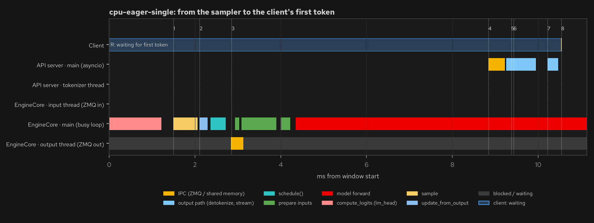
update_from_output returns, the busy loop starts the next step (red,
to the right). Handing the output to the client happens on two other threads: the engine's
output thread and the API server's event loop. Here the API server picked the message up
~6 ms after it was sent. Across the run the median for that hop is 0.31 ms; this
first token after a long prefill was the one outlier.
- 1472.75 sample_tokens
- 1473.36 update_from_output
- 1474.10 output thread: ZMQ send
- 1480.09 API server receives
- 1480.62 OutputProcessor
- 1480.68 detokenize
- 1481.46 SSE send
- 1481.79 client receives
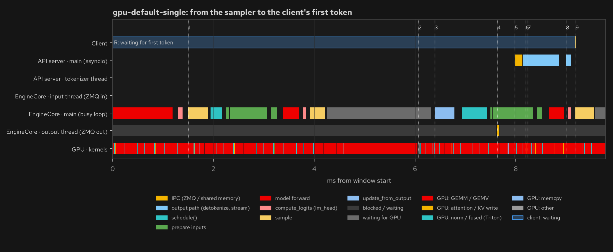
update_from_output (3) run, followed by the ZMQ
send (4) and the API server's output path (5–8).
- 34.57 sample_tokens (host)
- 39.14 last GPU kernel of the prefill
- 39.46 update_from_output
- 40.70 output thread: ZMQ send
- 41.05 API server receives
- 41.26 OutputProcessor
- 41.30 detokenize
- 42.06 SSE send
- 42.25 client receives
The trace annotation execute_context_…_generation_… wraps
execute_model: the forward pass and compute_logits. The sampler
runs afterwards, in a separate executor call (sample_tokens), so it appears
in the gap after each step. execute_model stashes the logits and returns
None; the engine core then asks for the sample
(v1/engine/core.py:684-686). A step that seems to be missing its
sampler is working as designed.
One loop drives everything: schedule, execute, sample, update
Once a request is admitted, everything that happens to it happens in the EngineCore's busy loop, one iteration per token. That loop is the heart of vLLM, and it is the part that differs most between the two devices.
def run_busy_loop(self):
while self._handle_shutdown():
self._process_input_queue() # block until there is work; add/abort requests
self._process_engine_step() # one step: self.step_fn(), then queue the outputs
In the traces this loop is the whole life of the main thread. Before the first request it
sits in _process_input_queue → queue.get (108 ms in the CPU
eager run, 506 ms during the pause between the two requests). It runs no timer: the
input queue drives it. When a request is waiting it runs steps back to back.
step_fn is where the devices part ways.
cpustep(): one batch at a time
scheduler_output = self.scheduler.schedule() # which requests, how many tokens each
future = self.model_executor.execute_model(scheduler_output, non_block=True)
grammar_output = self.scheduler.get_grammar_bitmask(scheduler_output)
model_output = future.result() # forward + logits (the annotation)
if model_output is None:
model_output = self.model_executor.sample_tokens(grammar_output) # sampler: separate call
engine_core_outputs = self.scheduler.update_from_output(scheduler_output, model_output)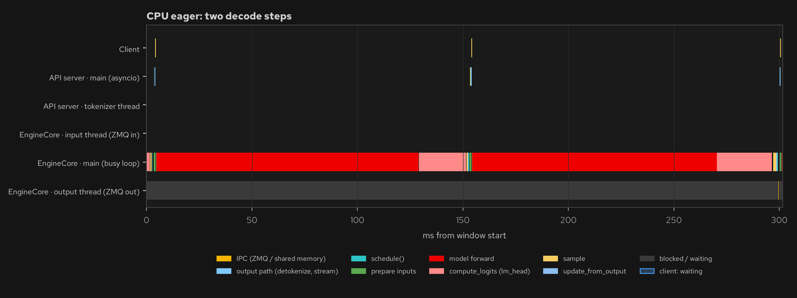
schedule() 0.50 ms, prepare inputs 1.07 ms, model forward
124.7 ms, compute_logits 24.4 ms (the 151,936-wide vocabulary
projection, read from 622 MB of fp32 weights every step), sample 0.63 ms,
update_from_output 0.20 ms. The scheduler is about 0.5% of the step.
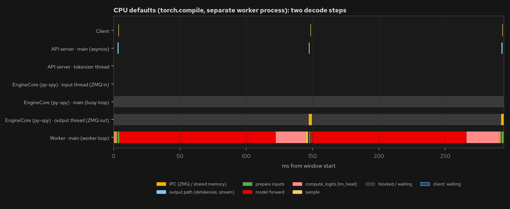
execute_model then sample_tokens, and in between it
spin-waits for the reply: py-spy finds it in
MessageQueue._wait_until_readable → SpinCondition.wait →
sched_yield. The engine core's output thread sends each token the moment the
worker returns it.
An eager decode step runs 4,983 ATen and custom ops. Most are
aten::to, view, slice, mul: the
RMSNorm, RoPE and SiLU arithmetic spelled out one op at a time. The compiled step runs
1,283. The 28 decoder layers become one Inductor-generated
call function. The 113 GEMMs stay oneDNN calls (_C::onednn_mm,
28 layers × 4 + lm_head). Attention stays a vLLM custom op
(vllm::unified_attention_with_output), which is where vLLM splits the graph.
The elementwise work is fused into generated C++ loops. The result: 13% less forward time,
because the GEMMs, which compilation does not touch, dominate.
gpustep_with_batch_queue(): always one step ahead
if self.scheduler.has_requests():
scheduler_output = self.scheduler.schedule() # step N+1
exec_future = self.model_executor.execute_model(scheduler_output, non_block=True)
future = self.model_executor.sample_tokens(grammar_output, non_block=True)
batch_queue.appendleft((future, scheduler_output, exec_future))
if len(batch_queue) < self.batch_queue_size: # size 2 with async scheduling
return None, True # don't wait: go schedule again
future, scheduler_output, _ = batch_queue.pop() # step N
model_output = future.result() # blocks on a CUDA event
engine_core_outputs = self.scheduler.update_from_output(scheduler_output, model_output)Each call schedules and launches the next step without waiting, then collects the previous one. The host prepares step N+1 while the GPU computes step N. That poses an obvious problem: how can step N+1 be scheduled before step N's token is known? Two pieces of code solve it:
AsyncScheduler(v1/core/sched/async_scheduler.py) assumes every running request produces exactly one token. It counts anum_output_placeholdersper request and schedules the next step as if that token already existed.- The model runner never brings the token to the host first. It copies the previous step's sampled IDs on the device (
prev_sampled_token_ids, gpu_model_runner.py:1761) into the next step'sinput_ids. The token reaches the CPU only to be streamed to the client.
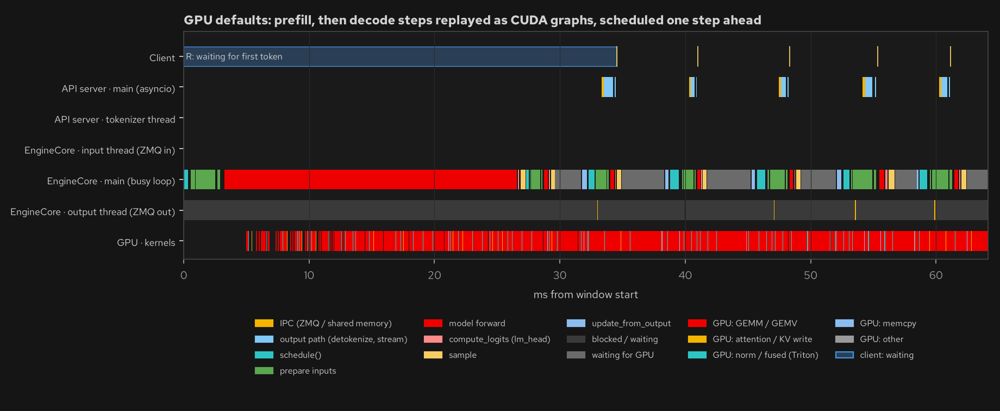
cudaGraphLaunch,
sample, update) and ~2.5 ms waiting on a CUDA event. The GPU row is solid: 6.7 ms
of kernels per step, back to back. The host is a full step ahead, so
a token reaches the client every 6.4 ms.
Eager vs CUDA graphs: same kernels, different launcher
| eager | default (CUDA graph) | |
|---|---|---|
| host time inside the step annotation | 19.6 ms | 2.5 ms |
| launch calls from the host | 349 cudaLaunchKernel + 29 cuLaunchKernel (cuBLAS) | 1 cudaGraphLaunch + 10 small cudaLaunchKernel + 2 driver launches (incl. lm_head, outside the graph) |
| kernels that run on the GPU | 379 | 377 |
| GPU busy time | 6.0 ms | 6.6 ms |
| host waits for the GPU | 0.01 ms (the GPU is never ahead) | 2.45 ms (the host is ahead) |
| time per output token at the client | 20.7 ms | 6.4 ms |
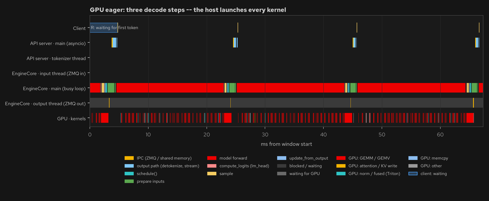
cudaLaunchKernel, one call
per kernel, not math. The GPU follows about a millisecond behind and is idle most of the
time. The wide red block at the end of each step is lm_head (1.25 ms on the
device). A CUDA graph removes the launch cost, and async scheduling hides what is left
behind the GPU's work. Together they turn a 20.7 ms token into a 6.4 ms one.
| phase | where | cpu eager | cpu default | gpu eager | gpu default |
|---|---|---|---|---|---|
| schedule() | scheduler.py:699 | 0.50 | sampled | 0.20 | 0.53 |
| prepare inputs | gpu_model_runner.py:1924 | 1.07 | 0.92 | 0.89 | 1.18 |
| model forward (host) | gpu_model_runner.py:3586 | 124.7 | 108.7 | 18.4 | 0.34 |
| compute_logits (host) | qwen3.py:339 | 24.4 | 24.4 | 0.06 | 0.10 |
| sample_tokens | gpu_model_runner.py:4269 | 0.63 | 0.67 | 0.32 | 0.46 |
| update_from_output | scheduler.py:2259 | 0.20 | sampled | 0.09 | 0.23 |
| wait for the GPU | gpu_model_runner.py:318 | — | — | 0.01 | 2.45 |
| client inter-token latency | 152.0 | 137.4 | 20.7 | 6.4 |
“Host” times on the GPU are the time to issue the work, not to run it. On the CPU the host is the device, so these are compute times. The CPU default column has no engine-core rows because there the engine core carries no torch profiler (py-spy only).
One decoder layer, from Python module to kernel
The model code is the same on both devices. What changes is what each module turns into when it runs: an ATen op, a vLLM custom op, a oneDNN call, a cuBLAS kernel, or an Inductor-generated Triton kernel replayed from a CUDA graph.
gpu_model_runner._model_forward # v1/worker/gpu_model_runner.py:3586 115.9 ms
└ Qwen3ForCausalLM.forward # model_executor/models/qwen3.py:327
└ @support_torch_compile wrapper # compilation/decorators.py:533 (a no-op when eager)
└ Qwen2Model.forward # models/qwen2.py:402 (Qwen3 reuses it)
└ Qwen3DecoderLayer.forward × 28 # models/qwen3.py:231 3.2-5.7 ms each
RMSNorm (input, fused residual add) # 0.17 ms
Qwen3Attention.forward # models/qwen3.py:156 1.65 ms
QKVParallelLinear 1024 → 4096 # 0.61 ms
RMSNorm q_norm, RMSNorm k_norm # 0.16 ms (Qwen3: per-head norm)
RotaryEmbedding # 0.05 ms
Attention (write KV, then attend) # 0.40 ms
RowParallelLinear o_proj 2048 → 1024 # 0.32 ms
RMSNorm (post-attention, fused add) # 0.10 ms
Qwen2MLP.forward # models/qwen2.py:111 1.37 ms
MergedColumnParallelLinear gate_up 1024 → 6144 # 0.81 ms
SiluAndMul # 0.06 ms
RowParallelLinear down 3072 → 1024 # 0.48 ms
qwen3.compute_logits → LogitsProcessor → lm_head # qwen3.py:339 · 1024 → 151,936 25.9 ms| module | cpueager | cpucompiled | gpueager | gpucompiled + CUDA graph |
|---|---|---|---|---|
| RMSNorm + residual (×2) | fused_add_rms_norm as plain ATen: to, pow, mean, mul… | fused into Inductor's generated C++ | vllm::fused_add_rms_norm_kernel | triton_per_fused_fused_add_rms_norm |
| QKV, gate_up, down | _C::onednn_mm | _C::onednn_mm (unchanged) | cuBLAS internal::gemvx — at one token a GEMM is a matrix-vector product | same, inside the graph |
| o_proj | _C::onednn_mm | _C::onednn_mm | CUTLASS wmma_tensorop_bf16 GEMM | same, inside the graph |
| q_norm, k_norm, RoPE | ATen arithmetic + _C::rotary_embedding | fused | vllm::rms_norm_kernel ×2 + vllm::rotary_embedding_kernel | one fused Triton kernel: triton_per_fused_add_cat_index_select_mul_rms_norm_split… |
| attention: write K,V | vllm::unified_kv_cache_update → _C::cpu_attn_reshape_and_cache | kept as a custom op | vllm::reshape_and_cache_flash_kernel | same |
| attention: attend | _C::cpu_attention_with_kv_cache | inside vllm::unified_attention_with_output: the graph split point | FlashAttention flash_fwd_splitkv_kernel + …_combine_kernel | same |
| SiluAndMul | ATen silu, mul | fused | vllm::act_and_mul_kernel | triton_poi_fused_mul_silu_slice |
| lm_head (once per step) | _C::onednn_mm, 1024×151,936 fp32: 24.4 ms | same | CUTLASS GEMM, 1.25 ms | same, launched outside the graph |
| per decode step | 4,983 host ops | 1,283 host ops | 379 kernels, 378 launches | 377 kernels, 1 graph launch + ~12 |
Compilation fuses everything around them
On both devices the four projections per layer stay library calls: oneDNN on the CPU, cuBLAS or CUTLASS on the GPU. torch.compile's job is the glue between them. Norms, RoPE and the SiLU gate collapse from many small ops into a few fused kernels. That is why compilation saves 13% on the CPU (GEMM-dominated) but is essential on the GPU, where the glue meant hundreds of launches.
It is where vLLM splits the graph
Attention reads the paged KV cache through block tables that change every step, so vLLM
keeps it as a custom op (unified_attention_with_output) that torch.compile does
not trace through. In PIECEWISE CUDA graphs the pieces sit between attention calls. In
FULL graphs (decode) attention is captured too.
Every token reads every weight
One decode token multiplies every weight in the model once, so the weights stream from
memory each step: ~1.2 GB in bf16, ~2.4 GB in fp32. The GPU's 6.6 ms of
kernels is ~180 GB/s of a ~272 GB/s peak. The CPU's ~133 ms of forward and
logits is ~18 GB/s. lm_head alone is 311 MB (bf16) or 622 MB (fp32)
per step, which is why it is the single biggest op on the CPU.
What the scheduler decides, step by step
With one request, every step is either “prefill everything” or “decode one token”. The scheduler earns its keep when requests overlap. Four requests were sent to arrive while others were decoding, each triggered by tokens the client had received rather than by a clock, so both devices saw the same pattern.
| request | prompt | output | sent when | what it is there to show |
|---|---|---|---|---|
| A | 512 | 24 | after a short throwaway request | a prefill that fills the whole budget |
| B | 1,024 | 16 | A has 4 tokens | chunked prefill alongside a running decode |
| C | 256 | 16 | A has 8 tokens | a small prefill mixed into a decode batch |
| D | 512 | 8 | A has 14 tokens | A's exact prompt again: a prefix-cache hit |
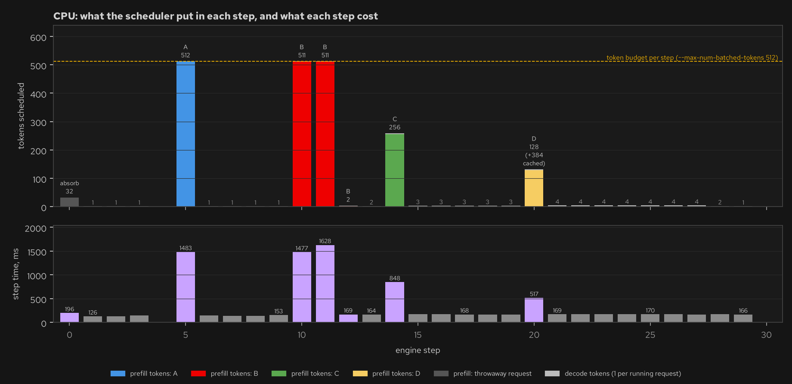
execute_context_N(T)_generation_M(G).
Prefill time grows with tokens: 1.48 s for 512, 0.85 s for 256, 0.52 s for
128. Decode steps cost 126–153 ms with one request and 164–176 ms with four, so
four tokens per step cost ~20% more than one.
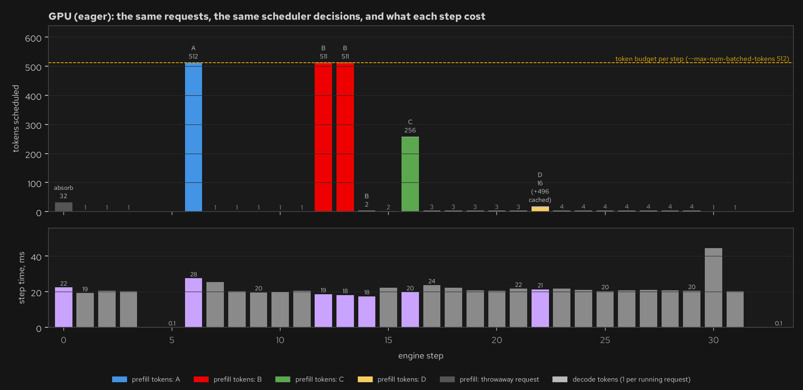
Five scheduler behaviours, each visible in one step
-
A token budget per step
Every step schedules at most
max_num_batched_tokenstokens across all requests (512 here; the CPU default is 2,048). A's 512-token prompt takes one whole step. The step boundary is where requests join or leave:schedule()runs once per step (v1/core/sched/scheduler.py:699). -
Chunked prefill
B's 1,024 tokens do not fit, so the scheduler splits them into 511 + 511 + 2 across three steps. Each of those steps also carries A's one decode token (511 + 1 = the budget). Running requests are scheduled first, and the prefill takes what is left. A keeps decoding while B prefills, which is why chunked prefill exists.
-
Mixed batches
C's 256 prompt tokens go in the same step as two decode tokens:
execute_context_1(256)_generation_2(2). One forward pass, one set of weights, different requests at different stages. The attention metadata (block tables, query lengths) is what lets one kernel handle all of them. -
Prefix caching, at block granularity
D repeats A's prompt, and A's KV blocks are still cached. The CPU computes only 128 of D's tokens. The scheduler always computes at least the last prompt token (it needs that token's logits), and the cache works in whole blocks, so 3 of the 4 128-token blocks hit and the last one is recomputed. The GPU, with 16-token blocks, computes only 16 (31 blocks hit). Same algorithm, different block size (platforms/cpu.py:549), so the CPU's cache can miss up to 127 tokens that the GPU's would hit.
-
Empty steps after a request finishes
After the last token, the trace shows
execute_context_0(0)_generation_0(0): a step with no tokens (0.4 ms).has_requests()stays true while finished requests have not yet been reported to the model runner (v1/core/sched/interface.py:205). The nextSchedulerOutputcarries their IDs so the runner can drop their cached state. On the GPU, with async scheduling, the trace shows two of them.
On the CPU a decode step's cost is mostly reading the weights once (chapter 5), so adding requests to the batch is almost free: 4 tokens for +20%. On the GPU in eager mode the cost is mostly launches, so adding requests is also almost free, for a different reason. With CUDA graphs (gpu-default-staggered) tokens reach the client every 6–9.5 ms with 1–4 requests in the batch. In all three cases the per-step cost barely depends on how many requests share it. That is what continuous batching exploits: the scheduler adds work to steps that cost nearly the same either way.
How each token gets from the sampler to the client
Every step produces at most one token per running request. Getting it to the client is a relay across two processes and three threads. It costs about the same on both devices, because it is all CPU-side Python.
-
Engine main thread:
update_from_output, then hand offThe scheduler appends the token to the request, checks stop conditions and frees the request's blocks if it finished (scheduler.py:2259). The busy loop puts the resulting
EngineCoreOutputs, one object for all requests in the step, on an output queue and immediately starts the next step (core.py:1678). -
Engine output thread: encode and send
A separate thread serializes the outputs with msgpack and sends them over ZMQ (core.py:2042, 2144). That way serialization and the socket write never sit inside the engine loop.
-
API server: receive, process, detokenize
An asyncio task receives and decodes the message (core_client.py:1217). The
output_handlertask (async_llm.py:880) gives it toOutputProcessor.process_outputs(output_processor.py:728), which updates each request's state, detokenizes incrementally (detokenizer.py:96), checks stop strings, and puts aRequestOutputon that request's queue. -
API server: format and stream
The request's
completion_stream_generator(openai/completion/serving.py:298) wakes up, builds the OpenAI-format chunk (pydantic → JSON) and writes it as a server-sent event through starlette and uvicorn.
| stage | cpu leg host (i7-12800H) | gpu leg host (Ryzen 9 7940HS) |
|---|---|---|
| engine → API server (ZMQ hop) | 0.31 | 0.36 |
| output_handler (whole batch) | 0.37 | 0.34–0.38 |
| ↳ OutputProcessor.process_outputs | 0.10 | 0.10 |
| ↳ detokenizer.update | 0.03 | 0.02 |
| SSE write (uvicorn send) | 0.09–0.11 | 0.06 |
| frontend work per token | ≈ 0.6 | ≈ 0.6 |
The same ~0.6 ms is 0.4% of a 137 ms CPU token and about 9% of a 6.4 ms GPU token. Detokenization is not the cost (20–30 µs). The cost is the Python plumbing around it. This is also why vLLM keeps the API server in its own process: the frontend's event loop and the engine's busy loop never compete for the same interpreter, and on a fast device with many concurrent streams the frontend's per-token work adds up.
Profiling vLLM: the knobs, the files, the traps
Everything in this guide came from vLLM's built-in torch profiler, py-spy, and a client that writes down when each token arrived. Here is how to reproduce it and how to explore the traces on your own.
Capture
# one device, one mode, one scenario (seconds of load; the GPU leg refuses to start above 80 °C)
DEVICE=cpu MODE=default SCENARIO=single harness/journey_run.sh
DEVICE=gpu MODE=eager SCENARIO=staggered harness/journey_run.sh
# what the harness passes to vllm serve, the part that matters for profiling
--profiler-config '{"profiler":"torch","torch_profiler_dir":"…",
"torch_profiler_with_stack":true,"torch_profiler_record_shapes":true,
"torch_profiler_use_gzip":true}'
curl -X POST localhost:8000/start_profile -d '{"max_iterations": 60}'
# … send requests …
curl -X POST localhost:8000/stop_profile| file | process | contents | bounded by |
|---|---|---|---|
| *.async_llm.*.pt.trace.json.gz | API server | Python frames only: HTTP, tokenizer, AsyncLLM, output path | start → stop_profile |
| rank0.*.pt.trace.json.gz | EngineCore (GPU; CPU eager here) or Worker (CPU default) | Python frames, ATen/custom ops with shapes, step annotations, CUDA launches and kernels | max_iterations engine steps, or stop_profile |
| enginecore.pyspy.chrometrace.json | EngineCore (CPU default) | 2 ms samples of every thread: the scheduler side, which has no torch profiler in this layout | harness start/stop |
| journey.perfetto.json.gz | all of the above | merged on one clock, one track per thread, the client's requests and tokens, numbered milestones (R00…) for the measured request | written by analysis/journey.py |
Explore
-
Open the merged trace in Perfetto
Go to ui.perfetto.dev → Open trace file →
traces/journey/gpu-default-single/journey.perfetto.json.gz. Processes are ordered client → API server → EngineCore → Worker → GPU. Type into the search box at the top forexecute_contextto find steps, orR0for the request's milestones. Drag over a step and press M to mark it, then look at what every other thread was doing at that moment. Very short Python frames are dropped to keep the file small; the per-process originals have everything. -
Print any thread's call tree
analysis/trace_tree.pyprints a collapsed call tree for any thread over any window, which is the quickest way to answer “what was this process doing here?”:T=traces/journey/cpu-eager-single/rank0.*.pt.trace.json.gz analysis/trace_tree.py $T --list-threads analysis/trace_tree.py $T --annotation 8 --root 'Qwen3DecoderLayer_14$' --depth 12 analysis/trace_tree.py $T --annotation 8 --root '_process_engine_step' --depth 10 -
Regenerate the analysis and figures
analysis/journey.py --run all # milestones, step tables, merged Perfetto traces analysis/journey_figures.py # figures/journey/*.png
Traps we hit, so you don't have to
max_iterations stops the engine to write the trace
When the cap is reached the profiler stops and writes the trace on the engine's main
thread. In an earlier run that froze vLLM for 15 s mid-request (log: “Max profiling
iterations reached” at 17:20:05, “Profiler stopped” at 17:20:20). Set the cap above the
steps you need and call stop_profile after the requests finish.
Not every process has a profiler
On the CPU in default mode the profiler runs in the API server and the worker. The engine
core, where the scheduler lives, has none. Sample it with
py-spy record --pid <EngineCore> --format chrometrace --idle --nonblocking, or
set VLLM_ENABLE_V1_MULTIPROCESSING=0 to pull the worker into the engine core.
That second option changes the layout you are studying.
Eager and default answer different questions
--enforce-eager shows every module, op and kernel, and is the only way to see
what the model runs. It also removes torch.compile and CUDA graphs, so the timing is not
how vLLM runs. Use eager for what, default for how fast and in what order.
/reset_prefix_cache may not exist
In v0.33 it returns 404 unless dev mode is enabled, so a warm-up request can leave cached blocks behind and the measured prefill comes out shorter. Give every warm-up a distinct prefix, and read the scheduled token count back from the step annotation.
Host time is not device time
On the GPU every host frame measures the time to issue work. The step annotation
can end long before its kernels do (prefill: 34.5 vs 39.1 ms). Read kernel rows for
device time, and match launches to kernels through their correlation id.
Line traces up by wall clock
Every torch trace carries baseTimeNanoseconds: absolute time in µs is
base/1000 + ts. py-spy stamps time from its own start, so align it on an event
both sides see (here: the end of each engine-core wait = the worker's reply).
Event types you will see
| category | what it is | example |
|---|---|---|
| python_function | a Python call (needs with_stack) | v1/core/sched/scheduler.py(699): schedule |
| user_annotation | a named range vLLM records | execute_context_1(512)_generation_0(0): the scheduler's batch for this step |
| cpu_op | an ATen or custom op on the host (with shapes if record_shapes) | _C::onednn_mm, aten::mul, vllm::unified_attention_with_output |
| cuda_runtime / cuda_driver | the host calling CUDA | cudaLaunchKernel, cudaGraphLaunch, cuLaunchKernel (cuBLAS), cudaEventSynchronize |
| kernel / gpu_memcpy | work on the device, linked to its launch by args.correlation | flash_fwd_splitkv_kernel, triton_per_fused_fused_add_rms_norm_0 |
(1) In gpu-default-single, find the step where the host launches decode step 2
while the GPU is still running the prefill. (2) In cpu-eager-staggered, find B's
second chunk and check that its onednn_mm input dims have M = 512. (3) Find
the zero-token step after the throwaway request and see what execute_model does
in it. (4) In gpu-eager-single, follow one cudaLaunchKernel to its
kernel by correlation id and measure the delay. (5) In cpu-default-single,
compare the worker's enqueue_output times with the EngineCore output thread's
sends.
Corrections to the earlier write-up
The first version of this study compared op-class costs and missed parts of how vLLM actually runs. Looking at the request's path turned up these errors. The earlier report is kept as op-costs.html, and these corrections apply to it.
| earlier claim | what the traces and source show |
|---|---|
| Profiled runs were “single process”, so one trace held scheduler and model. | vllm serve always runs the API server and EngineCore as separate processes. VLLM_ENABLE_V1_MULTIPROCESSING=0 only kept the CPU's worker inside the EngineCore. vLLM's real CPU layout has three processes. |
“Engine step = step()” on both devices. | The GPU runs step_with_batch_queue() with async scheduling by default, in eager mode too. Only the CPU disables it. |
| “The GPU is launch-bound” (74% of each layer's host time without a kernel). | True in eager mode only. With vLLM's defaults the host finishes early and waits ~2.5 ms per step. The GPU is the bottleneck. |
| The slow first request (34.8 s CPU / 14.2 s GPU) was profiler start-up. | It was the trace being written when max_iterations was reached mid-request: a 15 s stall on the engine's main thread. |
| The 480-vs-512 prefill was a reset that “did not take effect”. | /reset_prefix_cache returned 404 (dev-mode endpoint). The reset never ran on either device. Unique warm-up prefixes are what fixed it. |
| (not mentioned) | The CPU uses 128-token KV blocks and the GPU 16-token blocks, which changes prefix-cache hits. |
Glossary
- API server
- The frontend process: uvicorn/FastAPI, the OpenAI layer,
AsyncLLM, tokenization, detokenization, streaming. - EngineCore
- The engine process: an input thread, the busy loop (scheduler + KV-cache manager + executor), an output thread.
- Worker / model runner
- Prepares inputs, runs the forward pass, computes logits, samples. A separate process on the CPU, inside the EngineCore on the GPU.
- step
- One busy-loop iteration: schedule a batch, run one forward pass over it, sample one token per request, update state.
- SchedulerOutput
- The batch decision for one step: which requests, how many tokens each, which KV blocks, which requests finished.
- prefill / decode
- Processing prompt tokens (many per step) / producing one output token per running request per step.
- chunked prefill
- Splitting a prompt across steps so it fits the token budget and running decodes keep going.
- KV block
- A fixed-size slab of KV cache (16 tokens on this GPU, 128 on this CPU) handed out by the KV-cache manager. Also the unit of prefix caching.
- async scheduling
- Scheduling and launching step N+1 before step N's result is back, with the sampled token passed on the device. GPU default.
- CUDA graph
- A captured sequence of kernel launches replayed with one call. FULL graphs cover the whole decode forward; PIECEWISE graphs cover the pieces between attention calls.
- torch.compile / Inductor
- Traces the model and generates fused kernels: C++ on the CPU, Triton on the GPU. GEMMs and attention stay library or custom-op calls.
- eager
--enforce-eager: no compilation, no CUDA graphs; every module runs as written.